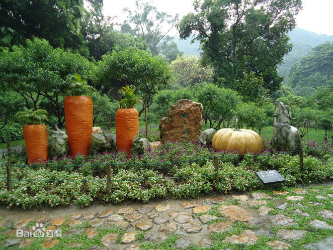

白云山，位于广州市白云区，为南粤名山之一，自古就有“羊城第一秀”之称。山体相当宽阔， 由30多座山峰组成，为广东最高峰九连山的支脉。面积20.98平方公里，主峰摩星岭高382米。  白云山是广州市风景区行业的第一家5A级旅游景区，也是广州市唯一同时拥有“全国文明风景旅游区”、 “国家5A级旅游景区”两项荣誉的景区。
陈氏书院，俗称陈家祠，位于广州市中山七路。陈家祠是广东现存祠堂中最富有广东特色的艺术建筑群， 布局严整，装饰精巧，富丽堂皇，是全国文物重点保护单位。21世纪以来， 陈氏书院以“古祠流芳”之名两度入选“新世纪羊城八景”，被誉为“广州文化名片”， 成为岭南地区最具文化艺术特色的博物馆和著名的旅游景点。
北京路商业步行街位于广州市中心，该街区是广州城建之始的所在地， 是广州有史以来最繁华的商业中心区，两千多年来，其中心城区和中心商业区的地位始终没有改变， 不仅创造了国内外城市建设史上罕见的奇观，也造就了广州灿烂辉煌的历史文化和商业文明。
越秀公园是广州最大的综合性公园。越秀公园主体越秀山以西汉时南越王赵佗曾在山上建“朝汉台”而得名。 园内有古之楚庭和佛山牌坊，古城墙、四方炮台、中山纪念碑、孙中山读书治事处碑、伍廷芳墓、明绍武君臣冢、 海员亭、五羊石像、五羊传说雕塑像群、球形水塔等景点。 公园所处区域，自元代以来一直是羊城八景之一；2006年公园被评为国家4A级旅游景区。
上下九步行街地处广州市荔湾区（俗称西关）的上九路、下九路、第十甫路之间， 是广州市三大传统繁荣商业中心之一。全长约1237米，共有各类商业店铺238间和数千商户。 在漫长的历史长河中，逐步形成了当今商业步行街中西合璧的四大西关风情特色， 并构筑成一副独特的、绚丽多姿的西关风情画，营造出亮丽的旅游风景线。 闻名遐迩的上下九商业街位于老城区西关，东起上下九路，西至第十甫西，横贯宝华路、文昌路， 全长1237多米，全路段店铺林立、共有商店300多家，日客流量达60万次。 荟萃了岭南文化中的老西关美食文化、岭南饮食文化和岭南民俗风情。 上下九步行街的标志性建筑是连绵千米的骑楼街，骑楼适应南方炎热多雨气候，可以挡避风雨侵袭， 挡避炎阳照射，造成凉爽环境。骑楼源自新加坡、香港等英属殖民地， 广州的骑楼是清代两广总督张之洞参考西方国家和地区，特别是香港的经验而引入到广州的建筑。
长隆欢乐世界坐落在广州番禺迎宾路，占地面积2000多亩，游乐设施近70项。 欢乐世界引进了瑞士、荷兰、德国、意大利、美国等全球领先的游乐设备公司的设备。 其中包括：“全球过山车之王”垂直过山车、创吉尼斯世界纪录的十环过山车、荣获行业设计金奖的摩托过山车、 超级大摆锤、东半球唯一的U型滑板等世界级巅峰游乐项目。
白水寨围绕白水仙瀑及奇峰秀色，建有9999级登山步径，总长6.6公里，19000多步，横跨三座高山，边接二大天池， 号称“天南第一梯”，取“胜境寻仙”、“悠闲怡景”、“知难而上”、“勇士进取”、“登高揽胜”和“登峰如愿”之义， 分“寻仙、怡景、知难、揽胜、勇士和登峰”六段梯，拾级而上尽览天南第一梯奇观，尽享休闲健身观光之乐， 百般风情皆可体验。走过六段梯，登上9999，心想事成，强身健体，六六大顺，长长久久。
珠江包括东江、西江和北江等支流，汇合至广州河段，景色十分秀丽。 几十艘豪华游船分别从大沙头码头和天字码头起航，沿途经过海印桥、广州大桥、海心沙、广州塔、 猎德大桥返程。全程70分钟左右。
深圳欢乐谷是华侨城集团新一代大型主题乐园，首批国家AAAAA级旅游景区，占地面积35万平方米， 总投资20亿元人民币，是一座融参与性、观赏性、娱乐性、趣味性于一体的中国现代主题乐园。 1998年开业以来，深圳欢乐谷经过五期的滚动发展，已成为国内投资规模最大、设施最先进的现代乐园。 十四年来，深圳欢乐谷共接待海内外游客3000多万人，入园人数连续8年居国内第一， 并连续四年荣膺亚太十大主题公园，成为中国主题公园行业的领跑者。
世界之窗位于广东省深圳市深圳湾社区深南大道，是中国著名的缩微景区（类似北京世界公园）， 以弘扬世界文化为宗旨，是一个把世界奇观、历史遗迹、古今名胜、民间歌舞表演融为一体的人造主题公园。 公园中的各个景点都按不同的比例仿建。 全园分为世界广场、亚洲区、美洲区、非洲区、大洋洲区、欧洲区、 雕塑园和国际街8个主题区，分别展示了法国埃菲尔铁塔、巴黎凯旋门、意大利比萨斜塔、印度泰姬陵、 埃及金字塔等一百多个世界著名的文化景观和建筑奇迹。公园中的各个景点，都按不同比例仿建， 精巧别致，惟妙惟肖。世界之窗的一个个景点都是一首首凝固的交响诗， 那些异彩纷呈的民俗表演则是一幅幅活泼生动的风情画。
东部华侨城位于中国深圳大梅沙，占地近9平方公里， 是由华侨城集团斥资35亿元精心打造的世界级度假旅游目的地， 是由国家环境保护部和国家旅游局联合授予的首个 “国家生态旅游示范区”。 东部华侨城是国内首个集休闲度假、观光旅游、户外运动、科普教育、生态探险等主题于一体的大型综合性 国家生态旅游示范区，主要包括大峡谷生态公园、茶溪谷休闲公园、云海谷体育公园、大华兴寺、 主题酒店群落、天麓大宅等六大板块，体现了人与自然的和谐共处。华侨城以"规划科学，功能配套齐全， 城区环境优美，风尚高尚文明，管理规范先进"为规划，以“让都市人回归自然”为宗旨， 定位于建设成为集生态旅游、娱乐休闲、郊野度假、 户外运动等多个主题于一体的综合性都市型山地主题休闲度假区。
锦绣中华和中国民俗文化村是深圳锦绣中华发展有限公司辖下的两大景区，为方便游客游览和管理， 已于2003年元旦两园合一，只需一张门票即可观赏两园。
华强北商业区位于广东省深圳市福田区，其前身是生产电子、通讯、电器产品为主的工业区域，其拥有厂房40多栋。 在华强北路南北930米，东西1560米，商业区总面积1.45万平方公里左右。 随着经济发展，华强北区域功能发生变化，华强北逐渐成为了中国最大的电子市场。市区政府及时把握住转变的契机， 1998年开始对华强北商业街进行改造，变成深圳最传统、最具人气的商业旺地之一。 华强北商业区作为全国首批购物放心一条街于2000年获得国家工商局授牌， 并在2008年第十届高交会华强北分会场开幕仪式上获得“中国电子第一街”荣誉称号， 标志着行内确认了华强北商业街在全国电子商业界的龙头地位。
西樵山（Xiqiao Mountain）风景名胜区是广东四大名山之一，享有国家AAAAA级旅游景区、 中国国家森林公园、中国国家地质公园、国家重点风景名胜区、“珠江文明的灯塔”等荣誉。 西樵山位于中国广东省佛山市南海区的西南部。西樵山是一座具有四万五千万年历史的死火山， 是我国华南史前时期最早的石器制造场，形成独特的“西樵山文化”，开创了珠江文明之先河。 与山西怀仁鹅毛口列为我国新石器时代南北方两大石器制造场。
佛山祖庙位于广东省佛山市禅城区，北宋元丰年间（1078—1085年）始建，明洪武五年（1372年）重修， 至清代初年逐渐成为一座体系完整、结构严谨、具有浓厚地方特色的庙宇建筑。光绪二十五年（1899年）， 祖庙大修，形成今日的祖庙建筑群。禅城祖庙与肇庆悦城龙母庙、广州陈家祠合称为岭南古建筑三大瑰宝， 现为国家级重点文物保护单位。
湖光岩风景区位于中国大陆最南端湛江市区西南18公里处，被联合国地质专家称为研究地球与地质科学的“天然年鉴”。 总面积为38平方公里，园区是一个以玛珥火山地质地貌为主体，兼有海岸地貌、构造地质地貌等多种地质遗迹， 自然生态良好的公园。景区是由雷琼世界地质公园博物馆、楞严寺、李纲醉月雕像、美食欢乐园、清风林、火山地质遗迹、 高密度负离子区、董公亭、玛珥湖、陈济棠将军墓、白牛仙女雕像等20个景点组成， 是集自然景观与人文景观于一身的旅游区。 湖光岩风景区是国家级风景名胜区、国家地质公园、国家AAAA级旅游景区和全国青少年科普教育基地，居湛江八景之首。
东海岛在中国雷州半岛东部，历史上为古雷州府辖岛。1958年东北大堤修建后方便了岛民出入， 今属湛江市经济开发区，岛内主要通有东山、东简、民安3个街道办。地势东高西低，东为玄武岩台地， 西为海积平原。东端距海滩2公里，有海拔111米高的龙水岭火山锥，面积500×500米， 为火山碎屑岩及少量玄武岩构成，是天然航海陆标。蔚鶨港和北山港为岛内最大渔港。 蔚鶨附近6.5公里岸线，水深26～40米，其中40米深水航道650米。岛内有尚待开发的土地40余万亩， 地势平坦，标高4～14米，为地质坚硬的火成岩基地。地下水日开采量可达50万立方米。 盛产鱼、盐，有庵里、红旗盐场，海水养殖 以鲍鱼和对虾著称。海滩绵长且洁白。